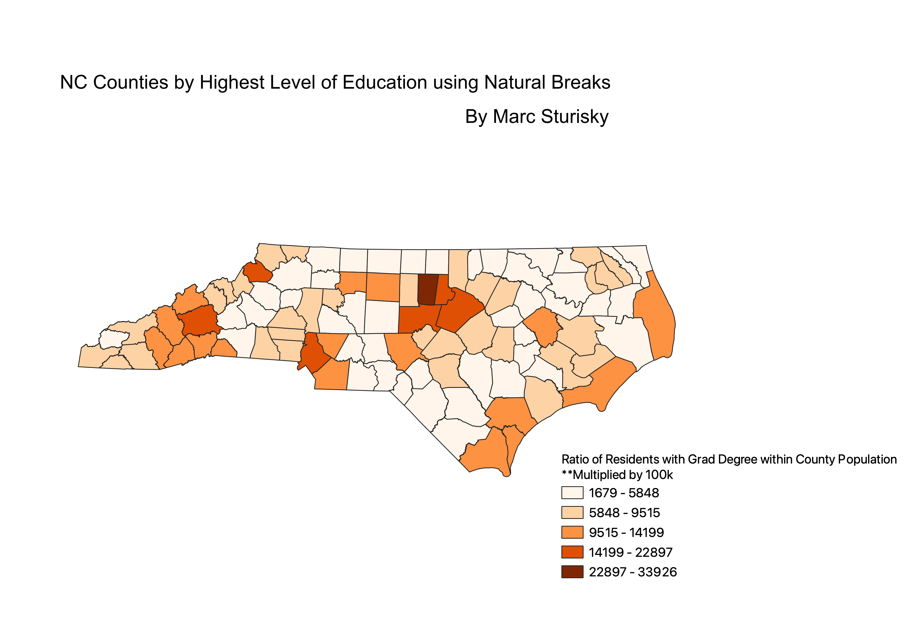
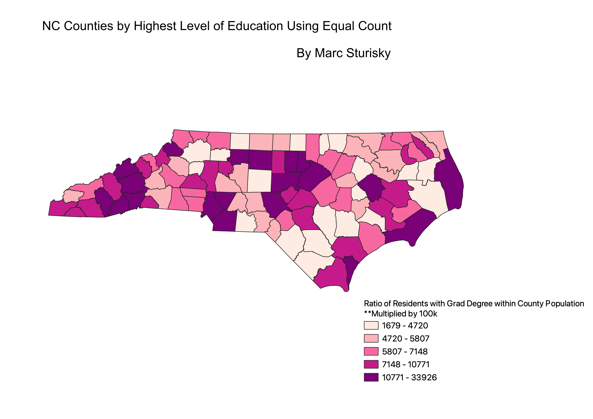
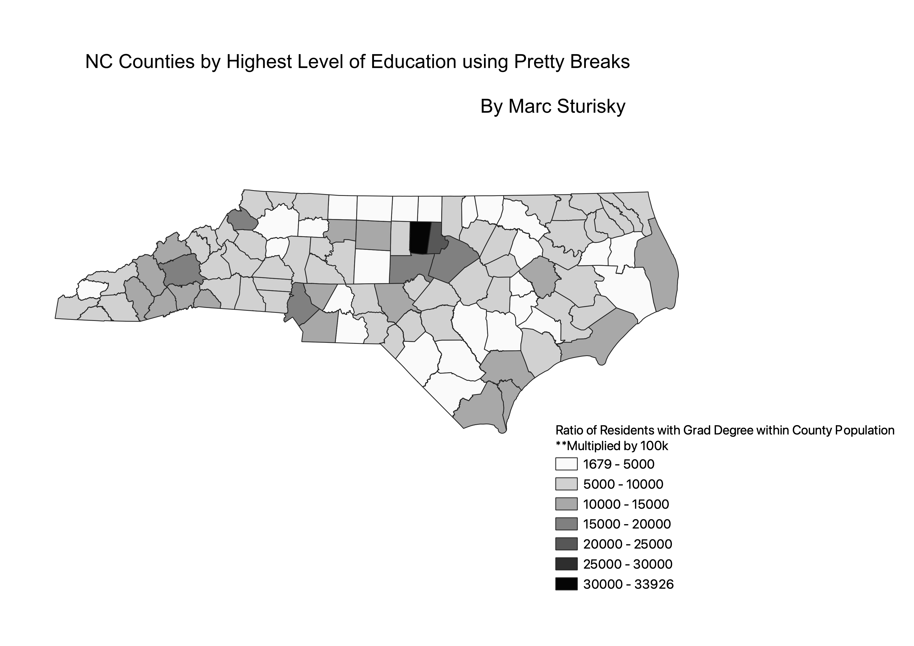

Homework 6, Part 2: 3 Different Modes for Data Categorization
I took from the census the total number of people in each county along with the number of people in each county with graduate or professional degrees. Dividing the number of people with grad degrees by the total, gave me a ratio that I could then multiply by 100,000 for data purposes. I was interested in calculating this ratio because I expected it to be common in highly populated counties such as Wake and Mecklenburg for more residents to have graduate degrees, but I wanted to see if there was a deviation as a result of giving smaller counties more emphasis through these ratios.

Natural breaks is a classification that strives to minimize the variation of data within each class so two pieces of data can not be in the same class if there numbers are not close together. This means that other classifications will have classes that fit data with larger deviations from one other. A con is that the outlier data has a noticable huge range in variation within its class, which contradicts the ideas behind this classification.

This classification attempts to have the choropleth's classification of North Carolina's split up as evenly as possible. This classification is great for wanting to keep the classes of various ranges as equal as possible. However, if you want some classes to have more emphasis than others, this is not the right classification.

The pretty breaks classification will round break points to whole numbers. This makes the table look a lot cleaner and easier to follow. However, breakeven points will lose their value because it will be prearranged where they are to fit the classification.
Data used for this project:
Link to geoJSON on Github
Link to cleaned csv dataset on Github